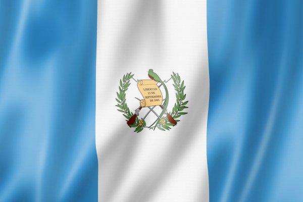

Simbolo patrios
- La monja blanca, flor nacional
- El quetzal, ave nacional
- La ceiba, árbol nacional
- Bandera nacional 
- Escudo nacional
Guatemala, oficialmente República de Guatemala, es un estado soberano, libre e independiente situado en el extremo noroccidental de América Central. Políticamente, es una república democrática y representativa organizada para su administración en 22 departamentos. Su cultura latinoamericana es variada; su amplia cultura autóctona es producto de la mezcla de las culturas maya y española durante la época virreinal. Es el país más poblado de Centroamérica, con 16 301 286 de habitantes según el censo realizado en el año 2018.8 Asimismo, el Área metropolitana de Guatemala cuenta con una población de 5 301 286 habitantes y una extensión territorial de 2253 km², lo que la convierte en el Área metropolitana más extensa y con mayor número de habitantes de América Central. Su capital y ciudad más poblada es la Ciudad de Guatemala, que a su vez es el principal centro económico y financiero del país. La economía de Guatemala es la más grande de Centroamérica.
108 889 km²